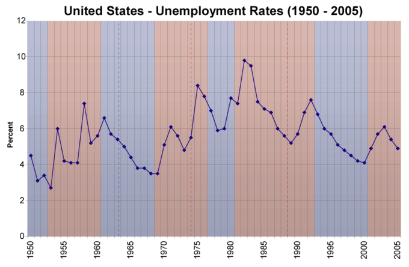
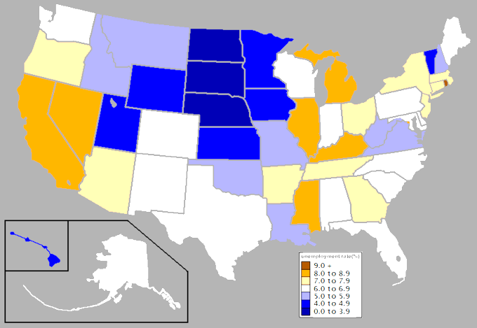
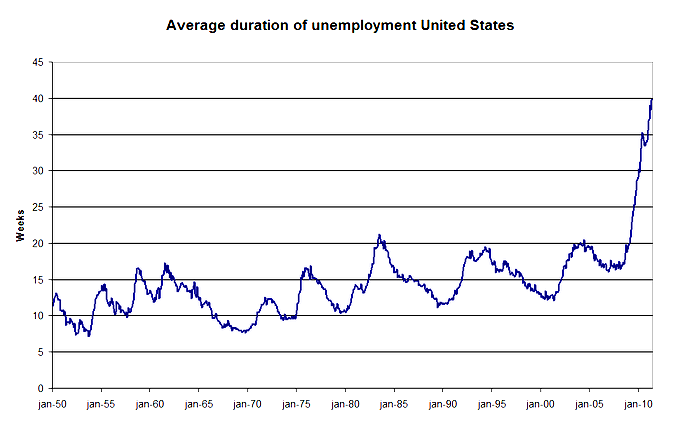
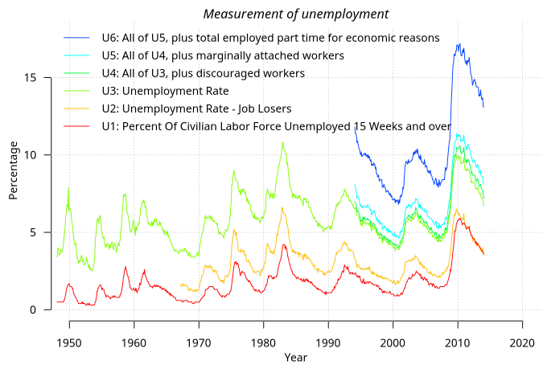
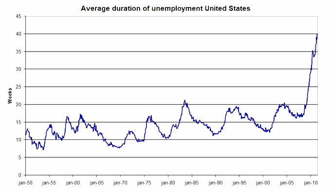
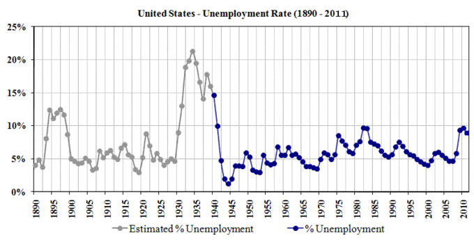
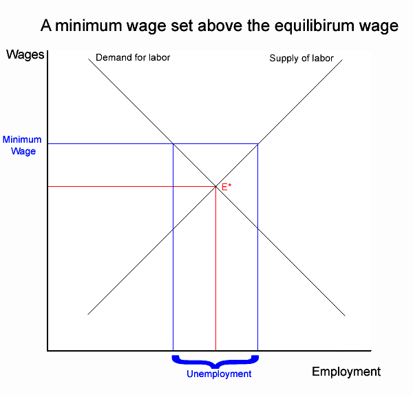

Table of Contents
22. Unemployment
22.1. Introduction to Unemployment
22.1.1. Defining Unemployment
22.1.2. Defining Full Employment
22.1.3. Types of Unemployment: Frictional, Structural, Cyclical
22.2. Measuring Unemployment
22.2.1. Measuring the Unemployment Rate
22.2.2. Shortcomings of the Measurement
22.2.3. Typical Lengths of Unemployment
22.3. Understanding Unemployment
22.3.1. Reasons for Unemployment
22.3.2. Impact of Public Policy on Unemployment
22.3.3. Impact of Unions on Unemployment
22.3.4. Efficiency Wage Theory
22.3.5. Job Creation and Destruction
22. Unemployment
22.1. Introduction to Unemployment
22.1.1. Defining Unemployment
Unemployment, also referred to as joblessness, occurs when people are without work and actively seeking employment.
Learning Objective
Classify the different measures and types of unemployment
Key Points
- Types of unemployment determine what the causes, consequences, and solutions. The types of unemployment include: classical, cyclical, structural, frictional, hidden, and long-term.
- Unemployment is calculated as a percentage by dividing the number of unemployed individuals by the number of all the individuals currently employed in the work force.
- When unemployment rates are high and steady, there are negative impacts on the long-run economic growth.
- Demand side and supply side solutions are used to reduce unemployment rates.
Key Term
- unemployment
- The state of being jobless and looking for work.
Unemployment, also referred to as joblessness, occurs when people are without work and are actively seeking employment. During periods of recession, an economy usually experiences high unemployment rates. There are many proposed causes, consequences, and solutions for unemployment.
Types of Unemployment
- Classical: occurs when real wages for jobs are set above the market-clearing level. It causes the number of job seekers to be higher than the number of vacancies.
- Cyclical: occurs when there is not enough aggregate demand in the economy to provide jobs for everyone who wants to work. Demand for goods and services decreases, less production is needed, and fewer workers are needed.
- Structural: occurs when the labor market is not able to provide jobs for everyone who wants to work. There is a mismatch between the skills of the unemployed workers and the skills needed for available jobs. It differs from frictional unemployment because it lasts longer.
- Frictional: the time period in between jobs when a worker is searching for work or transitioning from one job to another.
- Hidden: the unemployment of potential workers that is not taken into account in official unemployment statistics because of how the data is collected. For example, workers are only considered unemployed if they are looking for work so those without jobs who have stopped looking are no longer considered unemployed.
- Long-term: usually defined as unemployment lasting longer than one year.
Measuring Unemployment
Unemployment is calculated as a percentage by dividing the number of unemployed individuals by the number of all individuals currently employed in the workforce. The final measurement is called the rate of unemployment .
{kind=link}
Unemployment is calculated as a percentage by dividing the number of unemployed individuals by the number of individual employed in the labor force.
Effects of Unemployment
When unemployment rates are high and steady, there are negative impacts on the long-run economic growth. Unemployment wastes resources, generates redistributive pressures and distortions, increases poverty, limits labor mobility, and promotes social unrest and conflict. The effects of unemployment can be broken down into three types:
- Individual: people who are unemployed cannot earn money to meet their financial obligations. Unemployment can lead to homelessness, illness, and mental stress. It can also cause underemployment where workers take on jobs that are below their skill level.
- Social: an economy that has high unemployment is not using all of its resources efficiently, specifically labor. When individuals accept employment below their skill level the economies efficiency is reduced further. Workers lose skills which causes a loss of human capital.
- Socio-political: high unemployment rates can cause civil unrest in a country.
Reducing Unemployment
There are numerous solutions that can help reduce the amount of unemployment:
- Demand side solutions: many countries aid unemployed workers through social welfare programs. Individuals receive unemployment benefits including insurance, compensation, welfare, and subsidies to aid in retraining. An example of a demand side solution is government funded employment of the able-bodied poor.
- Supply side solutions: the labor market is not 100% efficient. Supply side solutions remove the minimum wage and reduce the power of unions. The policies are designed to make the market more flexible in an attempt to increase long-run economic growth. Examples of supply side solutions include cutting taxes on businesses, reducing regulation, and increasing education.
22.1.2. Defining Full Employment
Full employment is defined as an acceptable level of unemployment somewhere above 0%; there is no cyclical or deficient-demand unemployment.
Learning Objective
Define full employment
Key Points
- Full employment represents a range of possible unemployment rates based on the country, time period, and political biases.
- Full employment is often seen as an "ideal" unemployment rate. Ideal unemployment excludes types of unemployment where labor-market inefficiency is reflected.
- The full employment unemployment rate is also referred to as "natural" unemployment.
- The Non-Accelerating Inflation Rate of Unemployment (NAIRU) corresponds to the unemployment rate when real GDP equals potential output.
Key Term
- full employment
- A state when an economy has no cyclical or deficient-demand unemployment.
Full Employment
In macroeconomics, full employment is the level of employment rates where there is no cyclical or deficient-demand unemployment. Mainstream economists define full employment as an acceptable level of unemployment somewhere above 0%. Full employment represents a range of possible unemployment rates based on the country, time period, and political biases .
{kind=link}
The graph shows the unemployment rates in the United States. Full employment is defined as "ideal" unemployment. It is important because it keeps inflation under control.
Ideal Unemployment
Full employment is often seen as an "ideal" unemployment rate. Ideal unemployment excludes types of unemployment where labor-market inefficiency is reflected. Only some frictional and voluntary unemployment exists, where workers are temporarily searching for new jobs. This classifies the unemployed individuals as being without a job voluntarily. Ideal unemployment promotes the efficiency of the economy.
Lord William Beveridge defined "full employment" as the situation where the number of unemployed workers equaled the number of job vacancies available. He preferred that the economy be kept above the full employment level to allow for maximum economic production.
Non-Accelerating Inflation Rate of Unemployment (NAIRU)
The full employment unemployment rate is also referred to as "natural" unemployment. In an effort to avoid this normative connotation, James Tobin introduced the term "Non-Accelerating Inflation Rate of Unemployment" also known as the NAIRU. It corresponds to the level of unemployment when real GDP equals potential output. The NAIRU has been called the "inflation threshold. " The NAIRU states the inflation does not rise or fall when unemployment equals the natural rate.
As an example, the United States is committed to full employment. The "Full Employment Act" was passed in 1946 and revised in 1978. It states that full employment in the United States is no more than 3% unemployment for persons 20 and older, and 4% for persons aged 16 and over.
22.1.3. Types of Unemployment: Frictional, Structural, Cyclical
In economics, unemployment is occurs when people are without work while actively searching for employment.
Learning Objective
Discuss structural unemployment, frictional unemployment, and the natural unemployment rate
Key Points
- Structural unemployment focuses on the structural problems within an economy and inefficiencies in labor markets.
- Frictional unemployment is the time period between jobs when a worker is searching for or transitioning from one job to another.
- Cyclical unemployment is a type of unemployment that occurs when there is not enough aggregate demand in the economy to provide jobs for everyone who wants to work.
- Classical unemployment occurs when real wages for a jobs are set above the marketing clearing level.
- The natural unemployment rate represents the hypothetical unemployment rate that is consistent with aggregate production being at a long-run level.
Key Terms
- structural unemployment
- A mismatch between the requirements of the employers and the properties of the unemployed.
- frictional unemployment
- When people being temporarily between jobs, searching for new ones.
Unemployment
In economics, unemployment occurs when people are without work while actively searching for employment . The unemployment rate is a percentage, and calculated by dividing the number of unemployed individuals by the number of all currently employed individuals in the labor force. The causes, consequences, and solutions vary based on the specific type of unemployment that is present within a country.
{kind=link}
This graph shows the average duration of unemployment in the United States from 1950-2010. Unemployment occurs when there are more individuals seeking jobs than there are vacancies.
Structural Unemployment
Structural unemployment is one of the main types of unemployment within an economic system. It focuses on the structural problems within an economy and inefficiencies in labor markets. Structural unemployment occurs when a labor market is not able to provide jobs for everyone who is seeking employment. There is a mismatch between the skills of the unemployed workers and the skills needed for the jobs that are available. It is often impacted by persistent cyclical unemployment. For example, when an economy experiences long-term unemployment individuals become frustrated and their skills become obsolete. As a result, when the economy recovers they may not fit the requirements of new jobs due to their inactivity .
When there is structural unemployment, workers may seek to learn different skills so that they can apply to new types of jobs.
Frictional Unemployment
Frictional unemployment is another type of unemployment within an economy. It is the time period between jobs when a worker is searching for or transitioning from one job to another. Frictional unemployment is always present to some degree in an economy. It occurs when there is a mismatch between the workers and jobs. The mismatch can be related to skills, payment, work time, location, seasonal industries, attitude, taste, and other factors. Frictional unemployment is influenced by voluntary decisions to work based on each individual's valuation of their own work and how that compares to current wage rates as well as the time and effort required to find a job.
Cyclical Unemployment
Cyclical unemployment is a type of unemployment that occurs when there is not enough aggregate demand in the economy to provide jobs for everyone who wants to work. In an economy, demand for most goods falls, less production is needed, and less workers are needed. With cyclical unemployment the number of unemployed workers is greater that the number of job vacancies.
The Natural Unemployment Rate
The natural unemployment rate, sometimes called the structural unemployment rate, was developed by Friedman and Phelps in the 1960s. It represents the hypothetical unemployment rate that is consistent with aggregate production being at a long-run level. The natural rate of unemployment is a combination of structural and frictional unemployment. It is present in an efficient and expanding economy when labor and resource markets are at equilibrium. The natural unemployment rate occurs within an economy when disturbances are not present.
22.2. Measuring Unemployment
22.2.1. Measuring the Unemployment Rate
The labor force is the actual number of people available for work; economists use the labor force participation rate to determine the unemployment rate.
Learning Objective
Classify the six measures of unemployment calculated by the Bureau of Labor Statistics (BLS)
Key Points
- Unemployment occurs when people are without work and are actively seeking employment.
- There are three types of unemployment: cyclical, structural, and frictional.
- The CPS and CES are two surveys that the U.S. Bureau of Labor Statistics uses to determine the unemployment rate for households, businesses, and government agencies.
- The U.S. Bureau of Labor Statistics uses six measurements when calculating the unemployment rate. The measures range from U1 - U6 and were reported from 1950 through 2010. They calculate different aspects of unemployment.
Key Term
- unemployment
- The state of being jobless and looking for work.
Unemployment Rate
Unemployment occurs when people are without work and are actively seeking employment. In an economy, the labor force is the actual number of people available for work. Economists use the labor force participation rate to determine the unemployment rate.
Unemployment can be broken down into three types of unemployment:
- Cyclical unemployment: occurs when there is not enough aggregate demand in the economy to provide jobs for everyone who wants to work.
- Structural unemployment: occurs when the labor market is unable to provide jobs for everyone who wants to work. There is a mismatch between the skills of the unemployed workers and the skills necessary for the jobs available.
- Frictional unemployment: the time period between jobs when a worker is looking for a job or transitioning from one job to another.
Measuring Unemployment
The U.S. Bureau of Labor Statistics measures employment and unemployment for individuals over the age of 16. The unemployment rate is measured using two different labor force surveys.
- The Current Population Survey (CPS): also known as the "household survey" the CPS is conducted based on a sample of 60,000 households. The survey measures the unemployment rate based on the ILO definition.
- The Current Employment Statistics Survey (CES): also known as the "payroll survey" the CES is conducted based on a sample of 160,000 businesses and government agencies that represent 400,000 individual employees.
The unemployment rate is also calculated using weekly claims reports for unemployed insurance. The government provides this data. The unemployment rate is updated on a monthly basis.
Six Measures of Unemployment
The U.S. Bureau of Labor Statistics uses six measurements when calculating the unemployment rate. The measures range from U1 - U6 and were reported from 1950 through 2010 . They calculate different aspects of unemployment. The measures are:
{kind=link}
The U.S. Bureau of Labor Statistics used the six employment measures to calculate the unemployment rate in the United States from 1950 to 2010.
- U1: the percentage of labor force unemployed for 15 weeks or longer.
- U2: the percentage of labor force who lost jobs or completed temporary work.
- U3: the official unemployment rate that occurs when people are without jobs and they have actively looked for work within the past four weeks.
- U4: the individuals described in U3 plus "discouraged workers," those who have stopped looking for work because current economic conditions make them think that no work is available for them.
- U5: the individuals described in U4 plus other "marginally attached workers," "loosely attached workers," or those who "would like" and are able to work, but have not looked for work recently.
- U6: the individuals described in U5 plus part-time workers who want to work full-time, but cannot due to economic reasons, primarily underemployment.
22.2.2. Shortcomings of the Measurement
Unemployment is not an absolute calculation and it is prone to errors and biases related to data assembly and inconsistencies in reporting.
Learning Objective
Describe the rates in the U.S. of those who are employed, unemployed, and not in the labor force
Key Points
- The rate of unemployment is a percentage that is calculated by dividing the number of unemployed individuals by the number of individuals currently employed in the work force.
- The rate of unemployment is calculated using four methods: the Labor Force Sample Surveys, Official Estimates, Social Insurance Statistics, and Employment Office Statistics.
- The measurement of unemployment does have some shortcomings based on who is and is not measured.
- By not including all under-employed or unemployed individuals in the measurement of the unemployment rate, the calculation does not provide an accurate assessment of how unemployment truly impacts society.
Key Terms
- labor force
- The collective group of people who are available for employment, i.e. including both the employed and the unemployed.
- unemployment
- The state of being jobless and looking for work.
Unemployment
Unemployment, also called joblessness, occurs when people are without work and are actively seeking employment. Unemployment is measured in order to determine the unemployment rate. The rate is a percentage that is calculated by dividing the number of unemployed individuals by the number of individuals currently employed in the labor force .
Measurements
In order to find the rate of unemployment, four methods are used:
- Labor Force Sample Surveys: provide the most comprehensive results. Calculates unemployment by different categories such as race and gender. This method is the most internationally comparable.
- Official Estimates: combines information from the three other methods. The method is not the preferred method to use when calculating the rate of unemployment.
- Social Insurance Statistics: these statistics are calculated based on the number of individuals receiving unemployment benefits. The method is criticized because unemployment benefits can expire before an individual finds employment which makes the calculations inaccurate.
- Employment Office Statistics: only include a monthly total of unemployed individuals who enter unemployment offices. This method is the least effective for measuring unemployment.
Measurement Shortcomings
The measurement of unemployment is not an absolute calculation and is prone to errors. For example, the unemployment rate does not take into account individuals who are not actively seeking employment, such as individuals attending college or even individuals who are in U.S. prisons. Individuals who are self-employed, those who were forced to take early retirement, those with disability pensions who would like to work, and those who work part-time and seek full-time employment are not factored in to the unemployment rate. Some individuals also choose not to enter the labor force and these statistics are also not considered. By not including all underemployed or unemployed individuals in the measurement of the unemployment rate, the calculation does not provide an accurate assessment of how unemployment truly impacts society. Errors and biases are also present due to data assembly and reporting inconsistencies.
22.2.3. Typical Lengths of Unemployment
Short-term unemployment is any period of joblessness that lasts fewer than 27 weeks. Long-term unemployment lasts 27 or more weeks.
Learning Objective
Distinguish between short-term and long-term unemployment and the impact on people and economy
Key Points
- Unemployment occurs when people are without work and are actively seeking employment.
- Unemployment impacts the economy and society by increasing inequality, impeding long-term economic growth, wasting resources, and reducing economic efficiency.
- Unemployment impacts individuals because they are not able to meet their financial obligations which can lead to poverty, poor labor mobility, and low self-esteem. Unemployment is also know to cause civil unrest and conflict.
- Unemployment impacts individuals because they are not able to meet their financial obligations which can lead to poverty, poor labor mobility, and low self-esteem. Unemployment is also know to cause civil unrest and conflict.
Key Terms
- poverty
- The quality or state of being poor or indigent; want or scarcity of means of subsistence; indigence; need.
- unemployment
- The state of being jobless and looking for work.
Unemployment
Unemployment, also referred to as joblessness, occurs when people are without work and actively seeking employment. Generally, unemployment is high during recessions. Individuals struggle to find work when there are more job-seekers than vacant positions.
There are three types of unemployment:
- Cyclical: occurs when there is not enough aggregate demand in the economy to provide jobs for everyone who wants to work. The demand for most goods and services declines, less production is needed, and fewer workers are needed. Wages are sticky and do not fall to meet the equilibrium level which results in mass unemployment.
- Structural: occurs when the labor market is not able to provide jobs for everyone who wants to work. There is a mismatch between the skills of the workers and the skills needed for the jobs that are available.Structural unemployment is similar to frictional unemployment, but it lasts longer.
- Frictional: when a worker is searching for a job or transitioning from one job to another. Frictional unemployment is always present in an economy.
Lengths of Unemployment
Short-term unemployment is considered any unemployment period that lasts less than 27 weeks. The unemployment period is temporary and often includes the time needed to switch from one job to another. Also, if an individual is searching for employment the search period is relatively short.
Long-term unemployment is classified as unemployment that lasts for 27 weeks or longer. Being unemployed for a long period of time can have substantial impacts on individuals. Jobs skills, certifications, and qualifications lessen over time. When the job market finally increases many individuals will no longer match the requirements for the new positions. Long-term unemployment can also result in older workers taking early retirement .

This graph shows the average length of unemployment in the United States from 1950-2010. Short-term unemployment is considered less than 27 weeks, while long-term unemployment is joblessness that lasts 27 weeks or longer.
Social and Individual Impacts
Unemployment can have lasting impacts of individual people as well as the economy as a whole.
- Social: Within the economy, long-term unemployment increases the inequality present in the economy and impedes long-run economic growth. Unemployment wastes resources and generates redistributive pressures and distortions within the economy. When unemployment is high, the economy is not using all of the available resources, specifically labor. Unemployment can also reduce the efficiency of the economy because unemployed workers are willing to accept employment that is below their skill level.
- Individual: For individual people, unemployment increases poverty, creates poor labor mobility, and impacts self-esteem. When individuals are unemployed they are unable to meet their financial obligations. It is not uncommon for social unrest and conflict that get worse during times of mass unemployment.
22.3. Understanding Unemployment
22.3.1. Reasons for Unemployment
There are three reasons for unemployment which are categorizes as frictional, structural, and cyclical unemployment.
Learning Objective
Explain why the unemployment rate may fluctuate
Key Points
- The natural rate of unemployment is the unemployment rate when the economy is producing at its full potential output. This natural rate is positve, rather than zero, due to frictional and structural unemployment.
- Frictional unemployment is caused by an inability for workers and employers to find each other immediately.
- Structural unemployment is caused by mismatches between the skills offered by potential employees and those sought by employers.
- Cyclical unemployment occurs whenever the economy is not operating at its full, long-term potential. During low periods in the business cycle, firms demand fewer workers and the result is an unemployment level above the natural rate.
Key Terms
- structural unemployment
- A mismatch between the requirements of the employers and the properties of the unemployed.
- frictional unemployment
- When people being temporarily between jobs, searching for new ones.
- cyclical unemployment
- A type of unemployment explained by the demand for labor going up and down with the business cycle.
There are four types of unemployment. The distinction between them is important to economists because the policy prescriptions for addressing each type vary.
Natural Level of Unemployment
The natural level of unemployment is the unemployment rate when an economy is operating at full capacity. This is the unemployment rate that occurs when production is at its long-run level, removing any temporary fluctuations and frictions. It is mainly determined by an economy's production possibilities and economic institutions. At this level of unemployment, the quantity of labor supplied equals the quantity of labor demanded, though this does not imply that unemployment is zero. The reason why the natural rate of unemployment is still positive is due to frictional and structural unemployment.
Frictional Unemployment
Frictional unemployment is the time period between jobs when a worker is searching for or transitioning from one job to another. It is sometimes called search unemployment and can be voluntary based on the circumstances of the unemployed individual. Frictional unemployment exists because both jobs and workers are heterogenous, and a mismatch can result between the characteristics of supply and demand. Such a mismatch can be related to skills, payment, work-time, location, seasonal industries, attitude, taste, and a multitude of other factors.
There is always at least some frictional unemployment in an economy, so the level of involuntary unemployment is properly the unemployment rate minus the rate of frictional unemployment.
Though economists accept that some frictional unemployment is okay because both potential workers and employers take some time to find the best employee-position match, too much frictional unemployment is undesirable. Governments will seek ways to reduce unnecessary frictional unemployment through multiple means including providing education, advice, training, and assistance such as daycare centers.
Structural Unemployment
Structural unemployment is a form of unemployment where, at a given wage, the quantity of labor supplied exceeds the quantity of labor demanded, because there is a fundamental mismatch between the number of people who want to work and the number of jobs that are available. The unemployed workers may lack the skills needed for the jobs, or they may not live in the part of the country or world where the jobs are available. It is generally considered to be one of the "permanent" types of unemployment, where improvement if possible, will only occur in the long run.
A common cause of structural unemployment is technological change. With the advent of telephones, for example, some telegraph operators were put out of work. Their inability to find work was due to an oversupply of skilled telegraph operators relative to the demand for workers with that ability.
Cyclical Unemployment
Of course, the economy may not be operating at its natural level of employment, so unemployment may be above or below its natural level. This is often attributed to the business cycle: the expansion and contraction of the economy around the long-term growth trend. During periods in the business cycle when the economy is producing below its long-run, optimum level, firms demand fewer workers and the result is cyclical unemployment . In this case the long-run demand for labor is higher than the temporary demand, so the rate of unemployment is higher than its natural rate .
{kind=link}
The short-term fluctuations in the graph are the result of cyclical unemployment that changes when economic activity is above or below its long-term potential. Over time, unemployment has returned to about 5%, which is the approximate natural rate of unemployment.
22.3.2. Impact of Public Policy on Unemployment
Public policy seeks to minimize unemployment by providing information, training, facilities, and other programs to assist the unemployed.
Learning Objective
Review the importance of unemployment benefits in the American social welfare program
Key Points
- Policies to combat unemployment differ depending on the type of unemployment.
- Policies to combat frictional unemployment include providing free and clear information to help match available job-seekers and jobs, providing facilities to increase availability and flexibility, and combating prejudice against certain types of workers, jobs, or locations.
- Unemployment insurance alleviates the short-term hardship faced by the unemployed and allows workers more time to search for a job that fits their skills and preferences.
- Job training and education to equip workers with the skills firms demand are public policy responses to structural unemployment.
Key Terms
- frictional unemployment
- When people being temporarily between jobs, searching for new ones.
- structural unemployment
- A mismatch between the requirements of the employers and the properties of the unemployed.
- unemployment insurance
- Insurance against loss of earnings during the time that an able-bodied worker is involuntarily unemployed.
Most governments strive to achieve low levels of unemployment. However, the types of policies differ depending on what type of unemployment they address.
Frictional Unemployment
Frictional unemployment is the period between jobs in which an employee is searching for or transitioning from one job to another. It exists because the labor market is not perfect and there may be mismatches between job-seekers and jobs before workers are hired for the right position. If the search takes too long and mismatches are too frequent, the economy suffers, since some work will not get done.
Governments can enact policies to try to reduce frictional unemployment. These include offering advice and resources for job-seekers and providing clear and transparent information on available jobs and workers. This can take the form of free career counseling and job boards or job fairs. The government can provide facilities to increase availability and flexibility - for example, providing daycare may allow part-time or non-workers to transition into full-time jobs, and public transportation may widen the number of jobs available to somebody without a car. The government may also fund publicity campaigns or other programs to combat prejudice against certain types of workers, jobs, or locations.
On the other hand, some frictional unemployment is a good thing - if every worker was offered, and accepted, the first job they encountered, the distribution of workers and jobs would be quite inefficient. Many governments offer unemployment insurance to both alleviate the short-term hardship faced by the unemployed and to allow workers more time to search for a job. These benefits generally take the form of payments to the involuntarily unemployed for some specified period of time following the loss of the job. In order to achieve the goal of reducing frictional unemployment, governments typically require beneficiaries to actively search for a job while receiving payments and do not offer unemployment benefits to those who are fired or leave their job by choice.
Structural Unemployment
Structural unemployment is due to more people wanting jobs than there are jobs available. The unemployed workers may lack the skills needed for the jobs, or they may not live in the part of the country or world where the jobs are available.
Public policy can respond to structural unemployment through programs like job training and education to equip workers with the skills firms demand. A worker who was trained in an obsolete field, such as a typesetter who lost his job when printing was digitized, may benefit from free retraining in another field with strong demand for labor .
Many organizations seek to minimize structural unemployment by offering job training and education to provide workers with in-demand skills.
22.3.3. Impact of Unions on Unemployment
If the labor market is competitive, unions will typically raise wages but increase unemployment.
Learning Objective
Discuss the impact of unionization on unemployment
Key Points
- Unions function by negotiating with employers to create a collective agreement that applies to all union members and typically lasts for a set time period.
- Unions are able to raise wages because, when they are powerful, they may turn the labor market into a monopoly market.
- Many economists criticize unionization, arguing that it frequently produces higher wages at the expense of fewer jobs. Essentially, unionization benefits the already employed at the expense of the unemployed.
- In labor markets that are not competitive, the equilibrium without unionization may result in wages that are lower than the competitive equilibrium. In this case, unions may be able to raise wages without increasing unemployment.
Key Terms
- marginal product of labor
- the change in output that results from employing an added unit of labor.
- oligopsony
- An economic condition in which a small number of buyers exert control over the market price of a commodity.
- bargaining power
- The ability to influence the setting of prices or wages, usually arising from some sort of monopoly or monopsony position -- or a non-equilibrium situation in the market.
A union is a formal organization of workers who have banded together to achieve common goals such as protecting the integrity of its trade, achieving higher pay, increasing the number of employees an employer hires, and better working conditions. They function by negotiating with employers to create a collective agreement that applies to all union members and typically lasts for a set time period. For example, in a unionized industry, rather than each employee negotiating his or her own vacation time with the employer, a union will negotiate with the firm in order to create a contract governing vacation time that applies to every union member. This gives workers as a whole a stronger bargaining position when negotiating working conditions and pay.
Trade unions in their current form became popular during the industrial revolution, when most jobs required little skill or training and therefore almost all of the bargaining power fell with employers rather than employees. While unions have many goals, their primary objective has historically been to achieve higher wages for members of the union - that is, those who are already employed in an industry.
Unions are able to raise wages because, when they are powerful, they may turn the labor market into a monopoly market. Rather than a competitive market with many buyers (employers) and sellers (employees), there are many buyers but only one seller: the union. Like any monopoly market, the outcome will be an equilibrium with higher prices and lower supply than in the competitive equilibrium. In the case of the labor market, this means that wages will be higher, but so will unemployment. This is illustrated in the graphic, in which a union successfully raises the wage rate above the equilibrium wage. The gap between the point where the new wage rate intersects the demand curve and where it intersects the supply curve represents the resulting unemployment .
{kind=link}
If a union is able to raise the minimum wage for their members above the equilibrium wage, then wages will be higher but fewer workers will be employed.
Many economists criticize unionization, arguing that it frequently produces higher wages at the expense of fewer jobs. Essentially, unionization benefits the already employed at the expense of the unemployed. Further, by charging higher prices than the equilibrium wage rate, unions promote deadweight loss. Critics also argue that if some industries are unionized and others are not, wages will decline in non-unionized industries.
Unions in Imperfect Labor Markets
The above arguments assume that without unions, the labor market would be competitive - that is, there would be many buyers and many sellers of labor. In this competitive equilibrium, the wage rate would equal the marginal revenue product of labor and the outcome would be efficient. In reality this is often not the case. Rather, many industries are dominated by only a few firms, making the labor market an oligopsony - a market with many sellers of labor but only a few buyers. In an oligopsony firms have the advantage over workers, and wages may be lower than they would be at the competitive equilibrium.
If we assume that the labor market is imperfect and that wages are naturally lower than the marginal revenue product of labor, unions may increase efficiency by raising wage rates closer to the efficient level. In this case, wages will rise without a resulting rise in unemployment.
Unions, Productivity, and Unemployment
The above arguments focus on how unions affect unemployment by negotiating for higher wages, but unions may also affect unemployment in other ways. Many argue that unions are capable of raising productivity by reducing turnover, increasing coordination between workers and management, and by increasing workers' motivation. More productive workers means a higher marginal product of labor. Since the demand for labor is determined by its marginal product, increased productivity will cause demand to shift to the right and lead to an efficient equilibrium with both higher wages and lower unemployment.
22.3.4. Efficiency Wage Theory
Efficiency wage theory is the idea that firms may permanently hold to a real wage greater than the equilibrium wage.
Learning Objective
Define Efficiency Wage Theory
Key Points
- Efficiency wages are wages that are higher than the market equilibrium. Firms that pay efficiency wages could lower their wages and hire more workers, but choose not to do so.
- Some reasons that managers might choose to pay efficiency wages are to avoid shirking, reduce turnover, and attract productive employees.
- The consequence of the efficiency wage theory is that the market for labor does may not clear, even in the long run, and unemployment may be persistenly higher than its natural rate.
Key Terms
- turnover
- The number of times a worker is replaced after leaving.
- shirking
- To provide less quality work than is required.
Efficiency-Wage Theory
The market-clearing wage is the wage at which supply equals demand; there is no excess supply of labor (unemployment) and no excess demand for labor (labor shortage). In the basic economic theory, in the long run the economy will achieve this market-clearing equilibrium and will experience the natural level of unemployment. However, firms may choose to pay wages higher than the market-clearing equilibrium in order to incentivize increased worker productivity or to reduce turnover. This is called efficiency-wage theory.
Why Pay Efficiency Wages?
There are several theories of why managers might pay efficiency wages:
- Avoiding shirking: If it is difficult to measure the quantity or quality of a worker's effort, there may be an incentive for him or her to "shirk" (do less work than agreed). The manager thus may pay an efficiency wage in order to increase the cost of job loss, which gives a sting to the threat of firing. This threat can be used to prevent shirking .
- Minimizing turnover: As mentioned above, by paying above-market wages, the worker's motivation to leave the job and look for a job elsewhere will be reduced. This strategy makes sense when it is expensive to train replacement workers.
- Selection: If job performance depends on workers' ability and workers differ from each other in those terms, firms with higher wages will attract more able job-seekers, and this may make it profitable to offer wages that exceed the market clearing level.
Consequence of Efficiency Wage
The consequence of the efficiency wage theory is that the market for labor does may not clear and unemployment may be persistently higher than its natural rate. Instead of market forces causing the wage rate to adjust to the point at which supply equals demand, the wage rate will be higher and supply will exceed demand. This produces higher wages for those who are employed but higher levels of unemployment.
22.3.5. Job Creation and Destruction
Jobs are created when workers become more productive, the price of output increases, or when total economic output increases.
Learning Objective
Summarize how jobs are created and destroyed on a firm, industry, and economy wide level
Key Points
- Firms will continue to demand labor until the marginal revenue product of labor equal the wage rate - that is, until the marginal benefit of one more employee equals the marginal cost of that employee.
- Any factor that increases the marginal revenue product of labor or that decreases the marginal cost of labor will create jobs.
- At a macroeconomic level, jobs are created when the general level of output rises and jobs are destroyed when the general level of output falls.
- In general, output rises when the demand for consumer goods increases. Thus, factors that stimulate consumer demand also encourage job creation.
Key Terms
- business cycle
- A fluctuation in economic activity between growth and recession.
- marginal productivity
- The extra output that can be produced by using one more unit of the input
Job Creation at the Microeconomic Level
Firms decide to create or lose jobs based on the price of output, the price of inputs, and the marginal productivity of inputs. Firms will continue to demand labor until the marginal revenue product of labor equals the wage rate - that is, until the marginal benefit of one more employee equals the marginal cost of that employee. For example, suppose a shoe factory can sell shoes for \$50 a pair, and hiring an additional employee to work for an hour allows the factory to produce one extra pair of shoes. As long as the wage rate is less than \$50/hour, the firm can increase its profit by hiring more worker and producing more shoes. Eventually, however, the factory will become crowded, workers will need to wait in line for access to necessary tools and machinery, or the supply of materials will fail to keep up with the production pace. This will cause the marginal productivity of labor to fall, so that an additional hour of work produces less than one extra pair of shoes. If the prevailing wage rate is \$25/hour, the firm will hire until it takes two hours of work to produce one pair of shoes. At this point, the marginal benefit of hiring labor is \$25, equal to the marginal cost.
Factors that increase the productivity of labor will increase demand for labor and create jobs. Suppose a new type of sewing machine is invented that is smaller and allows shoemakers to work more quickly. This increases the productivity of labor, so that at its previous employment levels the firm can now earn \$35 for every hour of labor it employs. Just as before, the firm will create more jobs and continue to hire until the marginal revenue product of labor is again equal to the wage rate. Similarly, if the price of output rises firms will hire more employees. If the price of shoes increases to \$60, for example, workers that were previously making \$25 worth of shoes in an hour will be making \$30 worth of shoes each hour instead. Since the wage rate is still \$25, the firm will hire more workers until the marginal revenue product of labor is equal to the wage rate.
Job Creation at the Macroeconomic Level
At a macroeconomic level, jobs are created when the general level of output rises and jobs are destroyed when the general level of output falls. The quantity of labor employed and the wage rate are determined by the intersection of labor supply (the number of people willing to enter the workforce at any given wage) and the labor demand (the amount of labor producers are willing to employ at any given wage rate). Labor supply is based primarily upon the size of the population and therefore remains fairly stable. The labor demand, however, shifts to the left when an economy's output falls, since firms will need fewer workers to produce fewer goods. Likewise, labor demand shifts to the right when an economy's output rises. These shifts will destroy job and lower wages or create jobs and increase wages, respectively .
{kind=link}
As this hypothetical graph shows, when output (GDP) is rising, jobs are created and unemployment falls. When output is falling, jobs are destroyed and unemployment rises.
One reason that economic activity might rise or fall is the business cycle. The business cycle refers to the periods of expansions and contractions in the level of economic activities around the long-term growth trend. This is typically due to an increase or decrease in the economy-wide demand for consumer goods, but these cycles could also take place due to changes in production technology, changes in governmental policy, and many other factors.
At the macroeconomic level jobs may also shift between industries due to changes in demand or technology. For example, when health researchers uncovered facts about the health risks of smoking, the demand for cigarettes dropped and many jobs were lost in the tobacco industry. As for technology, the invention of the telephone created many jobs in telecommunications, but destroyed most of the jobs associated with telegraphs.